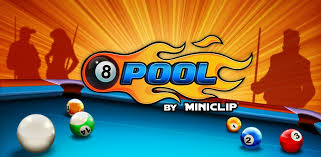

About Me
I have been playing 8 Ball Pool for over 8 years, and during this journey I’ve experienced countless highs and lows. Over time, I’ve built and managed multiple accounts, each one reflecting a different phase of my gameplay. From thrilling winning streaks to tough losing sessions, the game has taught me patience, strategy, and the importance of staying focused under pressure. Playing 8 Ball Pool is more than just a hobby for me—it’s a passion that sharpens my competitive spirit, challenges my decision-making, and connects me with players from around the world. Every shot, every frame, and every comeback adds to the experience that keeps me motivated to play and improve.